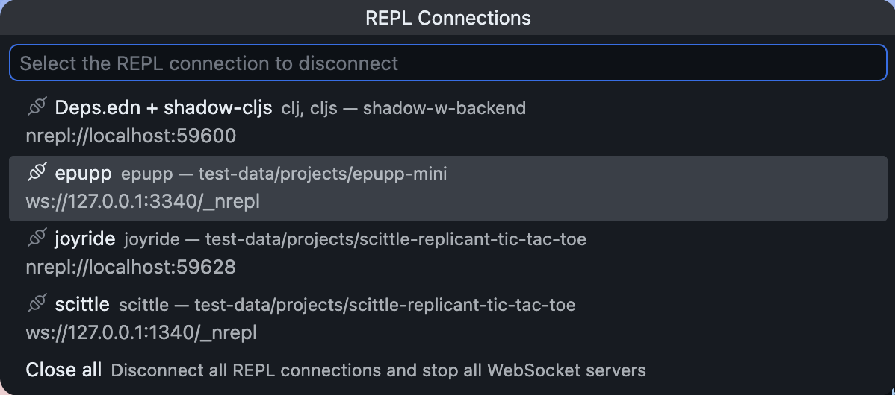
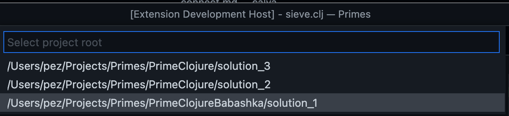

Connect Calva to Your Project#
When connected to your project's REPL Calva lets you evaluate code, supporting Interactive Programming. The REPL connection is also used to provide IDE functionality through the dynamic knowledge about the project that the REPL enables. The REPL communication depends on that your project has an nREPL server running, and that the cider-nrepl middleware is enabled.

For the easiest way to provide your project with these dependencies, the recommended way to connect is to use the so called Jack-in command.
Jack-in: Let Calva Start the REPL For You#
This way Calva can make sure it is started with the dependencies needed for a working Clojure and/or ClojureScript session. This is often referred to as Jack in (because that is what it is called in CIDER).
Jack-in supports both CLJ and for CLJS, and has built-in configurations for Leiningen, deps.edn, shadow-cljs, Gradle projects, as well as for the CLJS repl types: Figwheel Main, lein-figwheel (legacy Figwheel), shadow-cljs, and ClojureScript built-ins for both browser and node.js. Using jack-in provides your development environment with all the dependencies you need for Calva to work.
It works like so:
- Open your project in VS Code.
- Issue the command Start a Project REPL and Connect:
ctrl+alt+c ctrl+alt+j. - Answer the quick-pick prompts telling Calva about project types and what profiles to start. (See the Jack-in Project Types and Profiles wiki page for more info if needed.)
See also: Workspace Layouts
About project roots
You must have a project file, such as project.clj for Leiningen, or deps.edn for deps.edn, or shadow-cljs.edn for shadow-cljs, or settings.gradle/settings.gradle.kts for Gradle in the directory opened in VS Code in order for jack-in to work. If, after adding the project file, you experience an error during jack-in that says something could not be located, make sure you have the correct dependencies in your project file. For example, when using the Figwheel Main project type, you should have com.bhauman/figwheel-main in your project dependencies.
See also below, regarding multiple projects in a workspace
Aliases, Profiles, Builds#
When Jack-in starts it will depend on the project type, and whether ClojureScript is involved or not, and if it is, what kind of ClojureScript project, what will happen next. Calva will analyze the project files and will then give you prompts with selections based on what is found there.
You will need some basic knowledge about the project and the project type terminologies to answer the prompts.
There are ways to tell Calva the answers to these prompts beforehand, so that Jack-in can be a zero-prompting command. Read on.
Customizing Jack-in#
The main mechanism for customizing your Jack-in, including automating menu selections, and custom CLJS REPL types is Custom Connect Sequences. See also Customizing Jack-in and Connect
Connecting Without Jack-in#
If, for whatever reasons, you can't use Jack-in with your project (possibly because the REPL is started as part of some other job) all is not lost. Old fashioned Connect to a running REPL is still there for you. For all features to work in Calva while connecting to a running REPL, your environment needs to have REPL related dependencies set up.
However, just as before it can be tricky to get the dependencies right. Consider using Jack in to inform yourself on how to start your REPL to Calva's satisfaction. When you use Jack in, Calva starts a VS Code task for it and the command line used is displayed in the terminal pane used to handle the task. Reading that command line tells you what dependencies are needed for your project.
Even better: Copying that command line gives you the command to start the REPL with the correct dependencies.
All this said, I still recommend you challenge the conclusion that you can't use Jack-in.
Copy the Jack-in command line
There is a Calva command for copying the Jack-in command line to the clipboard. It will copy the command line including commands to change to the current REPL project root, avoiding hard-to-detect errors when starting the REPL in the wrong directory. The command also accepts an optional connect sequence argument (by name or object) so automations and keybindings can copy the exact command for a particular sequence without prompts.
The Generic Project Type
A reason to use the connect to a running REPL way, can be that Calva does not have a built in connect sequence/project type for the particular REPL you want to connect to. Maybe it is something like Lingy which doesn't yet have a built in Calva connect sequence. As long as there is an nREPL server to connect to, you can Connect with Calva, using the Generic connect sequence/project type. (You can also create a connect sequence with a custom command line, and use Jack-in anyway.)
See also Customizing Jack-in and Connect
Starting the REPL from application code?#
If your project is setup so that the REPL server is started by the application code, you will need to get the cider-nrepl middleware in place. See the cider-nrepl docs about embedding nREPL in your application.
WebSocket Connections (Browser REPLs)#
Calva can connect to browser-based nREPL servers — like those provided by Scittle, Epupp, or any sci.nrepl compatible runtime. Instead of the traditional TCP/bencode nREPL connection, Calva starts a WebSocket server that the browser connects to directly.
How It Works#
- You connect in Calva using a connect sequence with
webSocketPortconfigured - Calva starts a WebSocket server and shows "Waiting for browser REPL..."
- You connect the browser to the same port (e.g. via Epupp, or by loading a page with Scittle nREPL)
- Calva picks up the connection — you can evaluate code, get completions, look up docs
If the browser disconnects (tab reload, navigation, tab close), Calva keeps the server running and waits for a reconnection. When the browser comes back, Calva resumes automatically. You can stop the server from the Disconnect REPL Connection... menu.
One browser client at a time
Calva's WebSocket server accepts one client connection. If a new browser or browser tab connects, Calva switches to the new client. This means Calva is always connected to whichever browser client most recently connected to its server.
Configuration#
Valid values for webSocketPort:
- A port number (e.g.
1340) — start the WebSocket server on that port true— prompt for the port each time you connectfalse— disable WebSocket, use TCP/bencode instead (for use when extending the built-inscittleandepuppsequences but connecting via an external relay)
If webSocketPort is omitted, the connection uses TCP/bencode as usual.
When webSocketPort is set, the TCP-related properties (nReplPortFile, fallbackPort, host/port prompts) are not used.
By default, the WebSocket server binds to 127.0.0.1 (localhost only). To accept connections from other machines — for example when the browser runs on a different host or in a Docker container — set webSocketHost:
{
"calva.replConnectSequences": [
{
"name": "Browser REPL (network)",
"projectType": "scittle",
"webSocketPort": 1340,
"webSocketHost": "0.0.0.0"
}
]
}
Security: binding to all interfaces
Setting webSocketHost to "0.0.0.0" exposes the nREPL WebSocket server to your network. Only do this when you need remote access and understand the implications.
The built-in scittle and epupp connect sequences come with WebSocket enabled by default:
| Project type | WebSocket port |
|---|---|
| scittle | 1340 |
| epupp | 3340 |
For most setups, this works out of the box — just make sure the browser-side client is configured to connect to the same port.
To use a different port, override webSocketPort in your connect sequence:
{
"calva.replConnectSequences": [
{
"name": "My Browser REPL",
"projectType": "scittle",
"webSocketPort": 4200
}
]
}
See also: Connect Sequences.
Port Conflicts#
WebSocket ports are shared across the OS. If the port is already in use (by another VS Code window or another process), Calva will prompt you with the port pre-filled so you can either enter a different port or free the existing one and retry.
Using with Scittle#
Scittle provides an nREPL server that runs in the browser. See the Scittle nREPL docs for how to add nREPL to your page. Once set up:
- Connect in Calva using the scittle connect sequence (starts the WebSocket server on port 1340)
- Load your page in the browser — the Scittle nREPL client connects automatically
Using with Epupp#
Epupp lets you connect an nREPL to any web page. With WebSocket connections in Calva, the setup is:
- Connect in Calva using the epupp connect sequence (starts the WebSocket server on port 3340)
- In Epupp, set the WebSocket port to match and click Connect
Auto-select Project Type and Project Root#
You can make both Jack-in and Connect stop prompting you for project type and project root path in projects where you always want to use the same. See Connect Sequences.
Monorepos / multiple Clojure projects in one workspace#
If the workspace is a monorepo, Polylith repo or just a repository with more than one Clojure project, Calva will start the connect sequence with prompting for which project to start/connect to.

Multiple REPL Connections#
Calva can keep several REPL connections alive at the same time. This is useful when you want to run a backend and frontend REPL concurrently, keep an nREPL connected to a remote server while also working locally, or maintain a scratch REPL that should not be restarted when another project reconnects.
How concurrent connections are organized#
Every connection registers one or two session names (for example the default clj/cljs pair or the custom names you define in a connect sequence). Calva routes evaluations to the session whose glob matches the active file so you can keep coding without rewiring buffers manually. Run jack-in or connect again at any point to add another repl session.
Picking which connection to keep#
Use Calva: Disconnect from the REPL whenever you need to tear down one connection without touching the others. The command opens a quick pick that lists every connection along with its session names, host/port, and project root. When more than one connection is active the picker also offers Close all REPL connections as a fast way to clean the slate.
shadow-cljs#
Please see the shadow-cljs page.
Troubleshooting#
Jack-in and :main-opts#
When Calva starts the project REPL and connects to it (a.k.a. Jack-in), this is done by starting an nREPL server. For deps.edn projects this by default means that Calva will add -m ... with options that starts the server.
However: If you choose an alias at Jack-in that specifies :main-opts, it will make the Clojure CLI to add main opts and Calva will then not override these by adding -m ... to the command line. This means that an alias that specify :main-opts must result in an nREPL server being started, or else Calva won't have a server to connect to. Calva won't further analyze this, but will just warn you at Jack-in.
If you don't know if an alias starts an nREPL server or not, by all means, try it, if you have reasons for using that alias. You will notice if Jack-in works or not. If it doesn't work, you will need to run without that alias, or fix what happens when that alias is used so that an nREPL server is started. See https://nrepl.org/nrepl/usage/server.html about ways to do this.
Command Not Found Errors When Jacking In#
If you get command not found error when Calva tries to start your project, and you know you have the command installed, it's probably because VS Code starts from an environment where the command is not on the $PATH. It can look like so:
lein update-in :dependencies conj '[nrepl,"0.8.3"]' -- update-in :plugins conj '[cider/cider-nrepl,"0.25.8"]' -- update-in '[:repl-options,:nrepl-middleware]' conj '["cider.nrepl/cider-middleware"]' -- repl :headless
/bin/sh: lein: command not found
Jack-in process exited. Status: 127
The fix is to always start VS Code from the command line:
$ code
You might need to first run the Shell Command: Install code command in PATH.
This will also make sure your REPL has access to the environment you probably expect it to have access to. See below.
Go to Definition Not Working for Java Definitions#
On some systems, the Java source may not be installed along with the JDK. The source must be present on your system in order to navigate to Java definitions. See this comment for more details.
Environment Variables Are Not Readable From REPL#
If you've added environment variables in your OS, such as in your ~/.bashrc file (Linux), in order for them to be read in a REPL created by Calva's jackin command, VS Code must be started from a shell where the environment variables are defined. For example, if you can open a bash terminal and run echo $SOME_VAR and see the value there, then open VS Code from that terminal with code <project path>.
Viewing the Communication Between nREPL and Calva#
It may be helpful to view the messages sent between nREPL and Calva when troubleshooting an issue related to the REPL. See how to do that here.